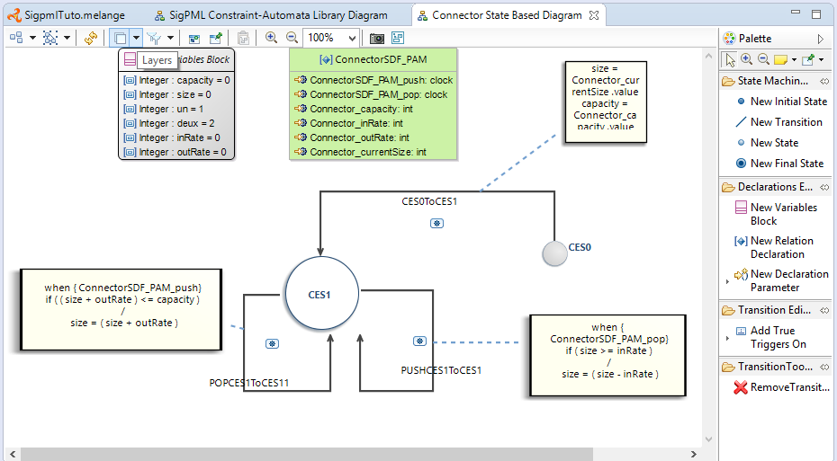

From the xDSML project, we select the associated wizard of the MoCC definition that helps to create the moCCML project. On the right click on the Melange file, select the menu "Create MoCC Library for language"→select the name of the language project→next→finish
MoCCML project creation. 
In the resulting project, we have a directory mocc with the MoCCML file.
In the MoCCML program, we define the constraint relation which will be referenced in the ECL program (in our case, the ConnectorSDF_PAM relation). This relation is based on an automaton definition.
This automaton describes how the events and variables are used to define a constraint automaton relative to each instance of the Connector class.
The source code is available through the MoCCML program and showed below
Unresolved directive in Tutorial_SigPML.asciidoc - include::SigPML/files/xSigpml.moccml[source code of the MocCCML program]
Now, we can visualize and edit if necessary the resulting MoCCML automaton. Switch to the modeling perspective (right high corner) and associted the nature modeling to the project (right click on the project→menu configure→Convert to modeling project). We set the MoCCML viewpoint definition on the project (right click on the project→Viewpoints selection→select MoCCML viewpoint).
To visualize the state machine, unfold the SigpmlTuto.moccml→select the State Relation based library for SigpmlTuto→new representation.
MoCCML diagram for the state based relation definition. 
To visualize the state machine, select the ConnectorSDF_PAM_Def block and on the right click slect new→state based diagram.
MoCCML state machine definition. 
In this editor, two layers are defined to have the state machine without the transition code, and the other layer "Detailed Transition Layer" add the transition code in the diagram. In this example, we have a state machine with an initial state, a state and three transition with the associated code (when clause with the specified clocks, an if condition with an expression on variables and an action code after the / )
After the MoCCML definition we define the mapping between this MoCC definition and the abstract syntax of our SigpmlTuto language.